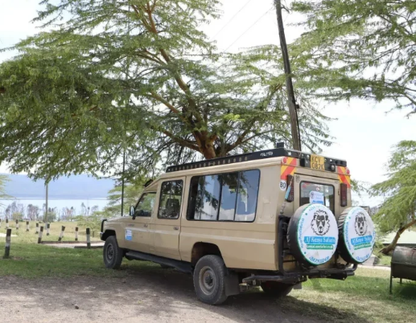

DreamComeTrueAdventures Destinations
The moment you land for your all-inclusive DreamComeTrueAdventures, you will feel like you are in a new world. A remote and relaxing paradise typified by the big 5, roaming wildlife, meandering rivers, and breathtaking beaches. Not to mention lots of scenic views, historical, and cultural gems. At KenyaLuxurySafari.co.uk, we’ve prepared this guide to give you a list of the top 10 destinations for all-inclusive Kenya beach holidays and safari destinations. We will also share our most booked Kenya safari and beach holiday packages. Each trip on our list comes complete with the price per person and suggested accommodation options for each travel season. The packages are on an all-inclusive basis, which means you won’t spend extra funds unless you choose to give tips or buy souvenirs.
Kenya Beach Holidays Destination #1 - Diani Beach
Nestled 30km south of Mombasa, Diani is a stunning oasis of striking turquoise waters, posh resorts, velvety sands, delicious Swahili delicacies, and tranquil ambiences. Here, your options are limitless, and the level of luxury guests are exposed to is unmatched. Abandon yourself to luxurious self-indulgence as you sip on your best champagne somewhere on the refreshing shores of Diani. Sample her cool, cathartic waters while swimming, diving, or surfing. Dive headfirst into a bowl of her finest delicacies at the Thyme, Nyumbani or Dari restaurants. Or simply spend your day in one of Diani’s countless resorts, sampling the luxury for which they are best known. Some of the most exciting things to do during Kenya holidays beach and safari packages to Diani include snorkeling, scuba diving, deep-sea fishing, a day trip to Wasini Island, dinner cruise, and more.
Kenya Safari and Mombasa Holiday Destination #2 - Watamu Beach
While Diani takes the cake for being Kenya’s most famous beach, Watamu carries the day for its striking pristineness. But it’s more than just velvety white sands and vivid blue waters when it comes to Watamu. Those on Kenya safari and beach holidays in Watamu beach are treated to an effortless showcase of coral reefs, palm vegetation, underwater sandbars, opulent resorts, and magnificent restaurants. You will also love the beach’s secluded location and the plethora of activities you can do around it. These include, but are not limited to, swimming, family and romantic picnics, beach walks, romantic lunches and dinners, surfing, diving, and water sports. Other excellent attractions around Watamu Beach include Gede Ruins is a 12th century Swahili village famous for tamarinds, exceptional indigenous forests, baobabs, monkeys, shrews, and distinct architecture. The Arabuko Sokoke, a protected forest reserve teeming with wildlife, birds, and unique vegetation, is the largest in East Africa. And the Mida Creek is a 32 km2 creek best known for its colourful array of fish, mangroves, birds, crabs, and palms.
Kenya Safari and Beach Vacation Destination #3: Chale Island
Chale is remarkable for its arresting mangrove forests, secluded beach, and undeniably gorgeous azure waters. It is so breathtaking that we have dubbed it the Kenyan capital of magical sunsets. Kenya safaris and beach vacations spent here are anything but average. Guests can count on being enthralled by this striking coast and the blissful escapism it begets. Relax on the beach. Go on a life-changing sunset stroll along the beach. Swim, snorkel, dive, surf, and get that blood pumping with some water sports. Sample some of the most delicious Swahili delicacies in existence. Dance the night away at the Sands at Chale Island’s bar. Or simply sit on your room’s balcony and let that striking view do its magic!
Luxury Kenya Safari and Beach Holidays Destinations #4 - Malindi Beaches
.jpg)
For calming sparkling waters, coral reefs, and eye-catching white-sandy shorelines, Malindi beaches make a strong case for being Kenya’s most refined. Spend an all-inclusive Kenya beach holiday here and get to witness first-hand the beauty of Malindi’s Swahili-inspired architecture, pristineness, perfect weather, and finger-licking seafood. Also, explore the Sawa Sawa Dhow Excursions, a full-day dhow trip that exposes you to secluded beach spots, intimate seafood lunches, snorkelling, and, drum rolls please, sundowner. Or the Ndoro Sculpture Garden for a great reconnection with nature and art.
Safari and Beach Holidays in Kenya Destination #5 - Wasini Island
Wasini is an island of blinding white beach sands and striking blue waters. A unique haven where tranquillity permeates and towering palm trees pierce clear blue skies. Kenya safaris plus beach holidays to this exotic destination introduce you to her imperial ways. Mornings spent gazing at sunrise, afternoons spent devouring her shore, and evenings spent watching the sunset. Swim, snorkel, dive, surf, and enjoy the peace characteristic of this secluded island. Or visit the Kisite Mpunguti Marine National Park for a colourful display of the thousands of fish species native to its waters. You can also stop by the Coral Garden for a mesmerising exploration of its fossilised coral structures.
Safari and Beach Holidays in Kenya Destination #8 - Tsavo National Parks
If you ever find yourself wandering around Voi, make sure to stop over the Tsavo National Parks, a sprawling, sensual duo known for its beauty and serenity. Your first marvel should be the Tsavo East, a sensational tourist magnet best known for its dust-red elephants, 300km Yatta Plateau (world’s most extended lava flow) and Galana River. Drive around the Galana and uncover a host of other wildlife, including hippos, rhinos, waterbucks, lions, crocodiles, lesser kudu and gerenuk. Go bird watching, trekking, or camping. Or find a scenic spot in the park and have some lunch as you devour the scenery magnificence all around you. In the spirit of saving the best for last, head over to the Tsavo West next and get to uncover a sensational world of open grasslands, acacia woodlands, riverine forests, and scrublands. Let the Mzima Springs blow your mind away with the slow-moving pace of its crystal-clear waters. Relish at the sight of buffaloes, hippos, lions, elephants, cheetahs, leopards, zebras. Discover bird species you never even thought existed. Go hiking, on walks, or do cave exploration. And end the day on a high note with an epic sundowner.
